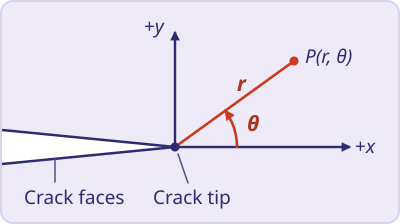

Substantial plastic deformation accompanies tearing. In many metals, voids nucleate near particles or inclusions, grow, and join to form a crack. A round tensile bar may neck and leave a cup-and-cone fracture with a fibrous center and inclined shear lips.
Brittle fracture
A crack can travel rapidly with little overall plastic deformation. Cleavage in ferritic steel typically runs through grains along crystallographic planes. Cracks can also follow weakened grain boundaries, producing an intergranular fracture surface.
Ductile tearing and brittle fracture can occur in different regions of one surface. Temperature, loading rate, and constraint around the crack tip influence which mechanism dominates.
Read the fracture surfaces (fractography)
Start at low magnification to locate the likely origin and trace the crack path. Use higher magnification to look for dimples, cleavage facets, or exposed grain boundaries.
Dimples in steel
Rounded depressions mark where voids grew and joined in a Charpy specimen from steel column N8-C1M1.
A notched steel specimen shows fine dimples close to the notch and cleavage facets farther across the ligament. If low-magnification evidence places the origin at the notch, the sequence is consistent with initial ductile tearing followed by cleavage. The dimples show where voids joined. The facets show where the crack crossed grains by cleavage.
History
Steel structures that fractured in cold service prompted investigations into the combined effects of material toughness, flaws, and structural details.
In 1943 the tanker fractured while moored in Portland, Oregon. Wartime investigations examined cold-temperature notch toughness alongside crack initiation at structural details, welding, and residual stresses. Welded hulls could let a crack travel a long distance once it started.
Using a 27 J Charpy criterion, NIST reported transition temperatures of about 40 °C longitudinally and 70 °C transversely for recovered hull plate. The estimated seawater temperature was −2 °C. The investigators also examined the wrought-iron rivets and their slag inclusions. The iceberg strike initiated the damage, and the response of plates and joints influenced the subsequent flooding.
The recovered samples tell us how those materials could respond in the cold. The test result alone cannot reconstruct how every plate and joint failed during the collision.
Many ferritic steels absorb little impact energy on the cold lower shelf and much more on the warm upper shelf. In between, ductile tearing and cleavage can appear on the same fracture surface. Cooling increases the stress required for plastic flow, making cleavage more competitive at a loaded notch.
The ductile-to-brittle transition temperature (DBTT) depends on the criterion. A temperature at 27 J, the midpoint between the energy shelves, and the temperature at 50% shear fracture appearance may differ. Report the criterion, specimen, and test conditions with the result.
A Charpy series gives 20 J at −40 °C and 50 J at −20 °C. Estimate T27 J by linear interpolation between those points.
The fraction of the interval is (27 − 20)/(50 − 20) = 7/30. Therefore T27 J = −40 + (7/30)(20) = −35.3 °C.
Impact tests
Charpy supports a notched bar on two anvils and strikes opposite the notch. Izod clamps one end and strikes the free part above the notch on the notched side. For metallic specimens, the absorbed energy in joules is the drop in pendulum potential energy from the release height to the peak after impact, corrected for machine losses.
The absorbed energy reflects the specimen’s response to impact, including plastic deformation and fracture. Use Charpy data at multiple temperatures to study a steel’s transition. The measured energy is specific to the setup. Compare results at matched method, specimen dimensions, notch geometry, orientation, and temperature.
The pendulum loses 110 J between release and the peak after fracture. The correction for machine losses over this swing is 2 J. The specimen’s reported absorbed energy is 110 − 2 = 108 J.
In 1954, the de Havilland Comet G-ALYP broke up near Elba. Investigators found fatigue cracking near the rear roof opening for a direction-finding antenna. They identified the edge of a nearby countersunk bolt hole as the probable crack origin. A second breakup near Naples that year was consistent with a similar failure, although too little wreckage was recovered to establish the cause.
In a separate full-scale test, investigators repeatedly pressurized Comet G-ALYU in a water tank. The cabin ruptured at a corner of the forward escape hatch. As an aircraft climbs and descends, the changing cabin pressure differential cycles the stress in the skin. Repeated cycles can initiate and grow a fatigue crack where a cutout raises the local stress. As the crack grows, the cabin can fracture at a pressure differential it had previously carried.
A hole or rounded notch raises the local elastic stress above the nominal stress. The elastic stress concentration factor is Kt = σmax/σnom. It is dimensionless.
The Inglis solution applies to an effectively infinite elastic plate under remote tension perpendicular to the long axis of an elliptical hole. The semi-axes are a and b, with tip radius ρ = b2/a.
Kt = 1 + 2a/b = 1 + 2√(a/ρ)
A circular hole gives Kt = 3. As the ellipse sharpens toward a crack, the elastic peak stress grows without bound. A sharp crack is described by the stress intensity factor KI, which sets the magnitude of the near-tip stress field.
Original schematic of the Inglis geometry. The peak tensile stress occurs at the ends of the major axis.
Find the stress at a hole
An elliptical hole has a = 4 mm and b = 2 mm. The remote tensile stress is 50 MPa, perpendicular to the long axis.
Kt = 1 + 2(4/2) = 5. The peak elastic stress is 5 × 50 = 250 MPa.
Griffith’s energy balance
A growing crack releases mechanical energy and requires energy to create new surfaces. The energy release rate G is the decrease in total potential energy per unit increase in projected crack area. In the ideally brittle Griffith model, two surfaces cost Gc = 2γs, where γs is the energy per unit area of one surface.
For a central through crack of total length 2a in an effectively infinite plate under uniform tension σ, the energy release rate and critical tensile stress are
G = πaσ2/E′
σc = √(E′Gc/(πa))
E′ = E in plane stress and E′ = E/(1 − ν2) in plane strain. At the onset of crack growth, G reaches Gc. A longer flaw needs a smaller applied stress to reach that condition. In metals, crack-tip deformation can add substantially to the surface energy cost.
At fixed remote stress, the energy release rate increases with crack half-length. The intersection marks the critical half-length for an ideally brittle plate.
Predict fracture stress with Griffith theory
A large glass plate in plane stress has E = 70 GPa, γs = 1.0 J/m2, and a central crack of total length 0.20 mm. Find σc for ideally brittle growth.
Use the half-length a = 1.0 × 10−4 m and Gc = 2.0 J/m2. Substituting into √(E′Gc/(πa)) gives 21.1 MPa.
Stress field near the crack tip
Measure distance r from the tip and angle θ from the direction straight ahead of the crack. In linear elasticity, stresses near a sharp crack have a leading term proportional to 1/√r. Its angular variation depends on the stress component and how the crack is loaded.
For a symmetrically opening crack (Mode I), the leading tensile stress normal to the crack plane directly ahead of the tip is
σyy(r, 0) ≈ KI/√(2πr)
KI is the amplitude of the opening field. The approximation applies in the elastic region where this term dominates, outside the crack-tip process zone and close to the tip relative to crack length and specimen dimensions. The elastic formula diverges as r approaches zero. In a metal, local yielding limits its applicability near the tip.

The origin lies at the tip. Along θ = 0, σyy acts normal to the crack plane.
Angular variation of the Mode I stresses
For an isotropic elastic solid, let C = KI/√(2πr). The leading in-plane terms are
Compare σyy at 0.25 mm and 1.00 mm directly ahead of the same fixed crack. If both points lie in the region where the leading term dominates, the ratio is √(1.00/0.25) = 2. The point four times closer has twice the opening stress.
Modes of fracture
The three loading modes describe the relative motion of the two crack faces. The crack front is the line where the faces meet the intact material.
Mode I · Opening
The faces separate normal to the crack plane.
Mode II · Sliding
The faces slide within the crack plane, perpendicular to the crack front.
Mode III · Tearing
The faces slide within the crack plane, parallel to the crack front.
If a load both opens a crack and slides its faces perpendicular to the crack front, the crack experiences mixed Mode I and Mode II loading.
Stress intensity factor
A stress intensity factor sets the amplitude of the leading near-tip elastic stress field for its loading mode. The three amplitudes are KI, KII, and KIII. Each depends on the applied loads, crack size, and geometry.
Mode I under remote tension
KI = Yσ√(πa)
G = KI2/E′
The dimensionless factor Y accounts for geometry and loading. Use Y = 1 for a central through crack in an effectively infinite plate under uniform tension. Here a is half the total crack length. For an edge crack, a is its depth and a different Y applies. Use metres for a with σ in MPa to obtain MPa√m.
The second equation relates the Mode I elastic field to Griffith’s energy release rate. In plane stress, E′ = E. In plane strain, E′ = E/(1 − ν2).
Calculate stress intensity for a central crack
A central through crack is 4.0 mm long in a wide plate under 150 MPa tension. With a = 0.0020 m and Y ≈ 1, the stress intensity is 150√(π × 0.0020) = 11.9 MPa√m. If the total length increases to 16.0 mm under the same stress and Y is still approximately 1, KI doubles to 23.8 MPa√m.
Fracture toughness
Fracture toughness measures a material’s resistance to extension of an existing crack under specified conditions.
Compare the applied intensity with toughness
KIc is the Mode I plane-strain fracture toughness measured under conditions of predominantly linear elastic response. Under matching conditions, the fracture criterion is
KI = KIc
Toughness can depend on temperature, loading rate, and crack orientation. With appreciable crack-tip plasticity, toughness can be characterized by the J-integral or crack-tip opening displacement (CTOD), subject to the limits of the test method. For stable tearing, a resistance curve describes how resistance changes as the crack extends.
Vary the crack length
Consider a wide plate with a central crack, Y = 1, σ = 180 MPa, and KIc = 24 MPa√m. Assume monotonic Mode I loading, plane strain, and small-scale yielding. Move the slider to compare the driving force with the toughness.
02436 MPa√m
KI = 14.3 MPa√m. Below the Mode I fracture threshold.
The toughness comparison addresses fracture under the stated load. Under cyclic loading, fatigue can extend a crack at peak stress intensities below KIc, as the Comet investigation illustrates.
Find a critical edge-crack depth
A wide plate in tension has σ = 160 MPa and KIc = 30 MPa√m. Assume Mode I, small-scale yielding, and Y = 1.12 over the relevant crack sizes.
Set KI = KIc. Then ac = (30/(1.12 × 160))2/π = 0.00892 m = 8.92 mm.
Fracture toughness testing
Grow a sharp fatigue precrack from a machined starter notch. Load the specimen so the crack opens in Mode I, and record force and displacement. Use the measured crack length and specimen geometry to determine resistance to crack extension.
Compact tension, C(T)
Two pins pull through holes in the specimen. The resulting moment opens the crack. Measure crack length from the load line and use the C(T) geometry calibration.
Single-edge bend, SE(B)
A loading roller bends a notched bar over two supports. The precrack lies on the tensile side, opposite the loading roller. The calibration includes the support span.
Quasistatic fracture toughness of metallic materials using precracked specimens.
A published disk compact specimen
The disk compact DC(T) specimen is a variation on the compact tension geometry. This research drawing shows the starter notch, remaining ligament, thickness, and width. The lab below shows rectangular C(T) and SE(B) sketches.
A compact tension test gives a conditional result KQ = 32 MPa√m. The force record gives PQ = 10.0 kN and a maximum force Pmax = 11.8 kN. The ratio Pmax/PQ = 1.18 exceeds the ASTM E399 limit of 1.10. The result remains conditional KQ. Qualification requires the force-record check and all other applicable checks.